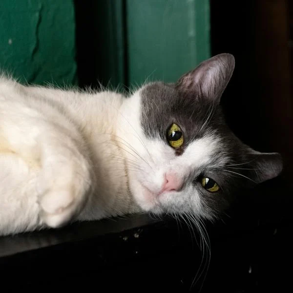

Welcome to our non-profit pet care and adoption platform—a space dedicated to connecting caring individuals with pets in need. Discover valuable tips on responsible pet care and ownership, and browse our database of adoptable animals. We're here to facilitate meaningful connections, making a positive impact one adoption at a time, with the sole objective of promoting animal welfare, not to gain money.
Available Pets for Adoption:
Luna
Luna is an elegant and mysterious cat with striking yellow eyes. She enjoys lounging in sunlit windowsills and is known for her graceful demeanor. Luna is the perfect companion for quiet evenings.
Rocky
Rocky is a strong and courageous dog with a heart of gold. Whether it's fetching a ball or keeping watch over the house, Rocky is up for the task. His playful spirit and protective nature make him a wonderful addition to any home.
Sadie
Meet Sadie, a gentle and sweet-natured dog with expressive eyes. Sadie loves cuddling on the couch and is known for her unwavering loyalty. She's a true companion for anyone seeking a loving and devoted friend.

Whiskers
Meet Whiskers, the charming and playful cat with fluffy whiskers. Whiskers loves to curl up in cozy spots and is always up for a game of chase with a feather toy.
Rio
Meet Rio, the vibrant and talkative parrot with feathers as colorful as a tropical sunset. Rio loves to mimic sounds and show off his impressive vocabulary. With a personality as lively as his plumage, Rio is sure to bring joy and laughter to your home.
Mittens
Say hello to Mittens! He is a fun-loving and affectionate cat. Mittens is quick to purr and loves to be the center of attention, making him an adorable addition to any family. His playful antics are sure to bring joy to your home.
Buddy
Buddy is an energetic and loyal dog who is always ready for an adventure. With a wagging tail and a heart full of love, Buddy is the perfect playmate for outdoor activities and long walks in the park.
Bunnykins
Bunnykins is a fluffy and gentle rabbit with the softest fur you've ever touched. This adorable bunny enjoys hopping around the garden and nibbling on fresh greens. Bunnykins is the epitome of cuteness and is ready to charm you with those expressive eyes.
Nibbles
Say hello to Nibbles, the tiny bundle of energy in the form of a hamster. Nibbles is a curious and playful companion who loves running on his wheel and exploring his cozy little habitat. With cheeks full of joy, Nibbles is the perfect pint-sized friend for anyone seeking a pocket-sized pal.
Pet Care Tips
1- Regular Veterinary Care:
Schedule regular check-ups with a veterinarian to ensure your pet is in good health. Vaccinations, parasite prevention, and dental care are crucial components of veterinary care.
2- Balanced Nutrition:
Provide a well-balanced and species-appropriate diet for your pet. Consult with your veterinarian to determine the right type and amount of food based on your pet's age, size, and health condition.
3- Hydration:
Always ensure that your pet has access to fresh and clean water. Proper hydration is essential for their overall well-being.
4- Exercise and Mental Stimulation:
Pets need both physical exercise and mental stimulation. Playtime, walks, and interactive toys can help keep them physically and mentally active.
5- Grooming:
Regular grooming is essential for many pets. Brush your pet's fur, trim nails, and clean ears as needed. This helps prevent matting, reduces shedding, and maintains overall cleanliness.
6- Safe and Comfortable Environment:
Create a safe and comfortable living environment for your pet. Remove potential hazards, provide a comfortable bed or shelter, and ensure that the temperature is suitable for your pet's species.
7- Training and Socialization:
Invest time in training and socializing your pet, starting from a young age. This helps in building a strong bond and ensures that your pet behaves well in different situations.
8- Identification:
Ensure your pet has proper identification, such as a collar with an ID tag and a microchip. This is crucial in case your pet gets lost.
9- Respect Their Preferences:
Learn about your pet's preferences and respect their boundaries. Provide a designated space where they can retreat when they need some quiet time.
10- Regular Attention and Affection:
Pets thrive on attention and affection. Spend quality time with your pet, offering cuddles, playtime, and positive interactions.